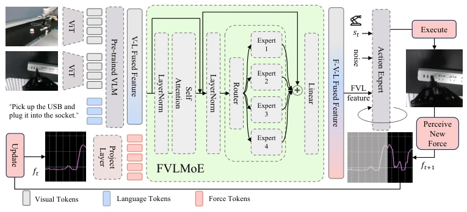
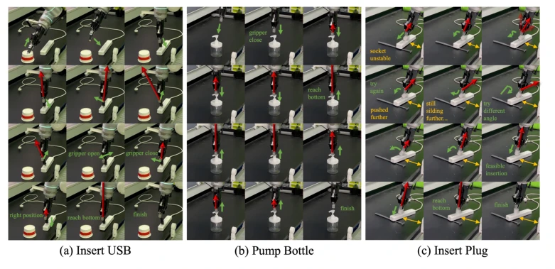
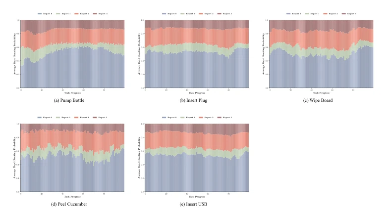
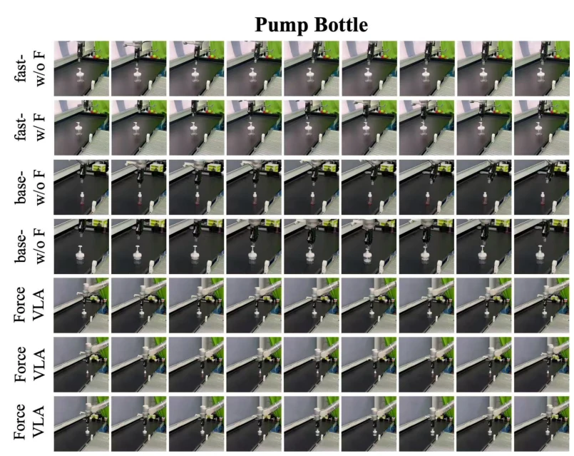

This paper equips VLA models with "tactile" capabilities, but instead of crudely concatenating features, it implements a force-aware MoE. Although "force feedback" is not new in the robotics community, incorporating it as a primary modality into the VLA architecture is indeed interesting. However, do not get too excited too early; this approach highly relies on expensive torque sensors, making it difficult for ordinary robotic arms to adopt. Moreover, although there are many experimental tasks, essentially they are still "plug/unplug" and "wiping", still far from true "dexterous manipulation". Overall, it is a pragmatic attempt at VLA physical intelligence, but still far from "general-purpose". It proves that force information is crucial for contact tasks, but generalization to more complex scenarios still needs verification.
Existing VLA models such as OpenVLA [9] and π0 [10] excel in semantic understanding and zero-shot generalization but often "fail" in contact-rich tasks. For instance, "plugging in a plug" or "peeling a cucumber" cannot be accomplished relying solely on vision and language instructions; contact force perception is mandatory. Humans naturally integrate proprioception and tactile feedback during manipulation [14], yet most existing VLA models neglect force sensing [12, 13], resulting in fragile policies under visual occlusion or dynamic uncertainty. Specifically, although π0 employs flow-based generation, it lacks modeling of physical interaction forces, making fine force modulation difficult. Consequently, an architecture capable of dynamically fusing force feedback is required, enabling robots to manipulate by "feeling" like humans.
Figure 1: Comparison between ForceVLA and baselines without force input. Without force feedback, the policy fails to correct pose errors and completes insertion incorrectly. In contrast, ForceVLA leverages external force signals to adjust insertion strategies dynamically, leading to successful execution despite initial misalignment.
Overall, it is based on the π0 framework, adopting an end-to-end policy. In the data flow, vision and language inputs are first encoded into context embeddings through a pretrained VLM (SigLIP/PaliGemma). The core innovation is the FVLMoE module, which is responsible for fusing 6-axis force feedback. There are two key design aspects: first, "late fusion", where force features are introduced after VLM encoding to avoid disrupting the pre-trained distribution (early fusion leads to performance collapse); second, MoE routing, where force tokens are concatenated with VL features and a gating network dynamically selects expert sub-networks to achieve modality-aware fusion. Finally, the fused features are injected into the flow-based action head to guide denoising action chunk generation. This architecture enables the model to adaptively adjust expert weights according to the contact phase, achieving "force-aware" action generation.
Figure 2: Robot manipulation tasks setting.

Figure 3: Overview of our ForceVLA model. Visual and language inputs are processed by a pre- trained VLM to form contextual embeddings. External force signals are projected and fused with VLM outputs via the FVLMoE module. The resulting multimodal features guide a flow-based action head to generate contact-aware robot actions.
The dataset ForceVLA-Data comprises 244 trajectories across 5 contact tasks ("plugging USB", "plugging a power plug", "pumping water", "wiping a board", "peeling a cucumber"). Baselines selected π0-base and π0-fast variants with and without force input. The primary metric is task success rate. Results indicate ForceVLA achieved an average success rate of 60.5%, 23.2% higher than π0-base without force input, reaching 80% on the "plugging" task. Ablation studies demonstrate that "late fusion" outperforms "early fusion", and MoE routing is more effective than simple concatenation. In generalization tests, under visual occlusion and unstable socket scenarios, ForceVLA performed significantly better than the baseline, proving the contribution of force feedback to robustness. Furthermore, in the "peeling cucumber" task, ForceVLA's peel length and minimum number of attempts were both superior to the baseline, showcasing fine force control capabilities.
Figure 4: Overview of task setups used in evaluation. (a) Insert USB, (b) pump bottle, (c) insert plug, (d) peel cucumber, and (e) wipe board. These tasks span diverse contact dynamics and manipulation skills, from precise insertions to tool-mediated surface interactions.Figure 5: Main task success rates across different methods. ForceVLA significantly outperforms all baselines on five contact-rich tasks. Incorporating external force feedback improves performance for π0-base model, while our method achieves the highest average success rate, demonstrating robust performance under complex interaction dynamics. “Wipe Board-1” indicates the success rate of successfully performing the wiping motion, while “Wipe Board-2” refers to the success rate of completely erasing the markings.Figure 6: Variants of generalization settings used in our experiments. (a–b) Different object geome- tries; (c) variation in socket height; (d) partial visual occlusion; (e) unstable socket conditions. These scenarios evaluate robustness under diverse physical and perceptual perturbations.

Figure 7: Trajectory visualizations across tasks and conditions. (a) USB insertion, (b) bottle pumping, and (c) plug insertion under stable and unstable socket conditions. Each sequence illustrates how ForceVLA adapts its actions in response to contact dynamics, retrying or adjusting pose when failures occur, ultimately achieving successful task completion.
其他图片Other Figures
Figure 8: Our data collection system setup.

Figure 9: Open-loop evaluation of expert load across different task completion percentages for various tasks: (a) Pump Bottle, (b) Insert Plug, (c) Wipe Board, (d) Peel Cucumber, and (e) Insert USB. Each subplot represents the average expert load (vertical axis) as a function of the task completion percentage (horizontal axis) over the episodes in the test dataset.

Figure 10: Key frames from Pump Bottle task videos.